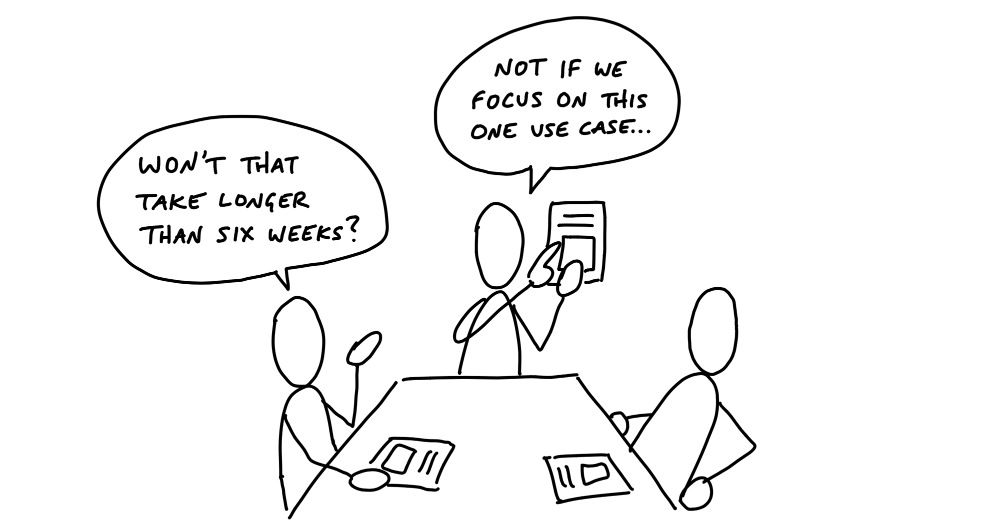

第八章 The Betting Table 投注會議¶

Now that we have some good potential bets in the form of pitches, it’s time to make decisions about which projects to schedule.
現在我們已經有了一些不錯的潛在賭注（提案），是時候決定要安排哪些專案了。
Six-week cycles 六週週期¶
Committing time and people is difficult if we can’t easily determine who’s available and for how long. When people are available at different times due to overlapping projects, project planning turns into a frustrating game of Calendar Tetris. Working in cycles drastically simplifies this problem. A cycle gives us a standard project size both for shaping and scheduling.
如果我們無法輕易確定誰有空以及有多少時間，那麼分配時間和人力就會變得很困難。當人們因為多個重疊的專案而在不同時間有空時，專案規劃就變成一場令人沮喪的日曆俄羅斯方塊遊戲。以週期為基礎的工作方式，能大幅簡化這個問題。一個週期為我們提供了標準的專案大小，無論是在規劃還是安排時間上。
Some companies use two-week cycles (aka “sprints”). We learned that two weeks is too short to get anything meaningful done. Worse than that, two-week cycles are extremely costly due to the planning overhead. The amount of work you get out of two weeks isn’t worth the collective hours around the table to “sprint plan” or the opportunity cost of breaking everyone’s momentum to re-group.
有些公司使用兩週週期（也叫做「衝刺」）。我們學到的是，兩週太短，根本無法完成有意義的工作。更糟的是，兩週週期會因為規劃上的開銷而變得非常昂貴。兩週所產出的工作量，根本不足以彌補在桌子旁花費的集體時間來進行「衝刺規劃」，或是打斷大家的工作節奏來重新集合的機會成本。
This led us to try longer cycles. We wanted a cycle that would be long enough to finish a whole project, start to end. At the same time, cycles need to be short enough to see the end from the beginning. People need to feel the deadline looming in order to make trade-offs. If the deadline is too distant and abstract at the start, teams will naturally wander and use time inefficiently until the deadline starts to get closer and feel real.
這讓我們開始嘗試更長的週期。我們希望能找到一個足夠長的週期，讓整個專案從開始到結束都能完成。與此同時，週期又必須足夠短，讓人能夠從一開始就看見結局。人們需要感覺到期限迫近，才能做出取捨。如果開始時期限太遙遠且抽象，團隊自然會漫無目的地遊走，並且低效地使用時間，直到期限漸漸逼近並變得真實可感。
After years of experimentation we arrived at six weeks. Six weeks is long enough to finish something meaningful and still short enough to see the end from the beginning.
經過多年的實驗，我們最終確定了「六週」週期。六週既足夠完成一些有意義的工作，又不會過長，足夠讓人從一開始就看到結局。
Cool-down 冷卻期¶
If we were to run six-week cycles back to back, there wouldn’t be any time to breathe and think about what’s next. The end of a cycle is the worst time to meet and plan because everybody is too busy finishing projects and making last-minute decisions in order to ship on time.
如果我們將六週週期連續進行下去，就會沒有時間喘口氣，也無法思考接下來要做什麼。週期結束時，是最不適合開會和規劃的時候，因為每個人都忙著完成專案並在最後一刻做出決策，以便準時交付。
Therefore, after each six-week cycle, we schedule two weeks for cool-down. This is a period with no scheduled work where we can breathe, meet as needed, and consider what to do next.
因此，在每個六週週期結束後，我們安排了兩週的「冷卻期」。這段時間沒有預定的工作安排，讓我們可以喘口氣，根據需要開會，並思考接下來的步驟。
During cool-down, programmers and designers on project teams are free to work on whatever they want. After working hard to ship their six-week projects, they enjoy having time that’s under their control. They use it to fix bugs, explore new ideas, or try out new technical possibilities.
在冷卻期內，專案團隊的程式設計師和設計師可以自由選擇做任何他們想做的事。在努力完成六週專案後，他們享受這段由自己掌控的時間。他們利用這段時間修復錯誤、探索新想法，或是嘗試新的技術可能性。
Team and project sizes 團隊與專案規模¶
In addition to standardizing the length of our cycles, we also roughly standardize the types of projects and teams that we bet on.
除了標準化週期的長度外，我們也大致標準化了我們所投注的專案類型和團隊規模。
Our project teams consist of either one designer and two programmers or one designer and one programmer. They’re joined by a QA person who does integration testing later in the cycle.
我們的專案團隊通常由一名設計師和兩名程式設計師組成，或者是一名設計師和一名程式設計師。隨後，會有一位 QA 人員在週期後期加入，負責進行整合測試。
These teams will either spend the entire cycle working on one project, or they’ll work on multiple smaller projects during the cycle. We call the team that spends the cycle doing one project the big batch team and the team working on a set of smaller projects the small batch team. Small batch projects usually run one or two weeks each. Small batch projects aren’t scheduled individually. It’s up to the small batch team to figure out how to juggle the work so they all ship before the end of the cycle.
這些團隊要麼會花整個週期的時間專注於一個專案，要麼會在週期內處理多個較小的專案。我們將專注於一個專案的團隊稱為「大批次」團隊，而處理多個較小專案的團隊稱為「小批次」團隊。小批次專案通常每個專案只持續一到兩週。小批次專案不會單獨排定時間，而是由小批次團隊自行決定如何安排工作，確保所有專案在週期結束前完成。
Now that we have a standard way to think about capacity, we can talk about how we decide what to schedule.
現在我們有了一個標準的方式來考量容量，接下來我們可以談談如何決定要排定哪些專案。
The betting table 投注會議¶
The betting table is a meeting held during cool-down where stakeholders decide what to do in the next cycle. The potential bets to consider are either new pitches shaped during the last six weeks, or possibly one or two older pitches that someone specifically chose to revive. As we said last chapter, there’s no “grooming” or backlog to organize. Just a few good options to consider.
「投注會議」是在冷卻期內舉行的一個會議，參與者會決定下一個週期要做什麼。需要考慮的潛在賭注包括在過去六週內提出的新提案，或是可能會有人特別選擇重啟並提出的幾個舊提案。正如上一章所說，這裡沒有「整理」或待辦清單需要管理。只有幾個值得考慮的好選項。
Our betting table at Basecamp consists of the CEO (who in our case is the last word on product), CTO, a senior programmer, and a product strategist (myself).
我們在 Basecamp 的投注會議成員包括 CEO（在我們公司中，CEO 是產品決策的最終決定者）、CTO、一位資深程式設計師和一位產品策略師（也就是我）。
C-level time is only available in small slices, so there’s an atmosphere of “waste no time” and the call rarely goes longer than an hour or two. Everyone has had a chance to study the pitches on their own time beforehand. Ad-hoc one-on-one conversations in the weeks before usually establish some context too. Once the call starts, it’s all about looking at the options that made it to the table and making decisions.
C-level 的時間通常只有少量的時間片段，因此會議氣氛總是充滿「不浪費時間」的精神，通常會議不會超過一到兩個小時。每個人都已經有機會在會議前的空閒時間自己研究提案。在會議前的隨機一對一對話也通常會建立一些背景。當會議開始後，所有人都會集中精力看待那些已經進入桌面討論的選項並做出決策。
The output of the call is a cycle plan. Between everyone present, there’s knowledge of who’s available, what the business priorities are, and what kind of work we’ve been doing lately. All of this feeds into the decision-making process about what to do and who to schedule (more on this below).
會議的產出是週期計劃。在場的每個人都了解誰有空、業務優先順序是什麼，以及我們最近在做什麼樣的工作。所有這些資訊都會融入決策過程中，幫助決定要做什麼以及該安排誰來負責（稍後會詳細說明）。
The highest people in the company are there. There’s no “step two” to validate the plan or get approval. And nobody else can jump in afterward to interfere or interrupt the scheduled work.
公司最高層的領導者會參與這場會議。沒有「第二步」來驗證計劃或獲得批准，也沒有人可以在會後跳出來干涉或打斷已排定的工作。
This buy-in from the very top is essential to making the cycles turn properly. The meeting is short, the options well-shaped, and the headcount low. When these criteria are met, the betting table becomes a place to exercise control over the direction of the product instead of a battle for resources or a plea for prioritization. With cycles long enough to make meaningful progress and shaped work that will realistically ship, the betting table gives the C-suite a “hands on the wheel” feeling they haven’t had since the early days.
來自最高層的認可對於確保週期順利運作至關重要。這場會議簡短、選項經過充分打磨，且參與人數少。當這些條件得到滿足時，投注會議便成為一個可以掌控產品方向的場所，而非資源爭奪戰或是優先順序的請求。當週期足夠長以便實現有意義的進展，且工作的規劃能夠現實地交付時，投注會議使高層管理團隊重新獲得一種「掌舵」的感覺，就像早期階段一樣。
The meaning of a bet 賭注的意義¶
We talk about “betting” instead of planning because it sets different expectations.
我們談論「投注」而不是「規劃」，因為這樣能設定不同的期望。
First, bets have a payout. We’re not just filling a time box with tasks until it’s full. We’re not throwing two weeks toward a feature and hoping for incremental progress. We intentionally shape work into a six-week box so there’s something meaningful finished at the end. The pitch defines a specific payout that makes the bet worth making.
首先，投注是有回報的。我們不是僅僅將時間框填滿任務，直到它滿了。我們不是把兩週的時間投入一個功能並希望能有漸進式的進展。我們故意將工作規劃為六週的週期，這樣結束時就能完成一些有意義的成果。每個提案都定義了一個具體的回報，使得這個投注值得去做。
Second, bets are commitments. If we bet six weeks, then we commit to giving the team the entire six weeks to work exclusively on that thing with no interruptions. We’re not trying to optimize every hour of a programmer’s time. We’re looking at the bigger movement of progress on the whole product after the six weeks.
其次，投注是承諾。如果我們投注六週，那麼我們就承諾讓團隊專心投入這六週，專注於這個專案，並且不會有任何干擾。我們不是在試圖優化程式設計師每小時的時間。我們是在看六週後整體產品進步的更大格局。
Third, a smart bet has a cap on the downside. If we bet six weeks on something, the most we can lose is six weeks. We don’t allow ourselves to get into a situation where we’re spending multiples of the original estimate for something that isn’t worth that price.
第三，一個明智的投注有風險上限。如果我們投注六週在某件事上，那麼我們能損失的最多就是六週。我們不會讓自己陷入這樣的情況：投入的時間超過原來估算的數倍，而最終結果卻不值得這個價值。
Let’s look at these last two points more closely.
讓我們更仔細地看看這最後兩點。
Uninterrupted time 不被打擾的時間¶
It’s not really a bet if we say we’re dedicating six weeks but then allow a team to get pulled away to work on something else.
如果我們說要專心投入六週，但又讓團隊被抽去做其他事情，那就不算是真正的賭注了。
When you make a bet, you honor it. We do not allow the team to be interrupted or pulled away to do other things. If people interrupt the team with requests, that breaks our commitment. We’d no longer be giving the team a whole six weeks to do work that was shaped for six weeks of time.
當你做出賭注時，你就要遵守它。我們不允許團隊被打擾或抽走去做其他事情。如果有人插手並要求團隊處理其他事項，那就違背了我們的承諾。我們就無法再給團隊六週的完整時間來專注於本來為六週週期所規劃的工作。
When people ask for “just a few hours” or “just one day,” don’t be fooled. Momentum and progress are second-order things, like growth or acceleration. You can’t describe them with one point. You need an uninterrupted curve of points. When you pull someone away for one day to fix a bug or help a different team, you don’t just lose a day. You lose the momentum they built up and the time it will take to gain it back. Losing the wrong hour can kill a day. Losing a day can kill a week.
當人們要求「只有幾個小時」或「只需要一天」時，不要被騙了。動能和進展是二階的事物，像是成長或加速。你無法用單一的點來描述它們。你需要的是一個不間斷的曲線。當你把某人抽走一天來修復錯誤或幫助其他團隊時，你不僅僅是失去一天。你失去了他們所建立的動能，以及重新找回這些動能所需的時間。失去錯誤的那一小時可能會毀掉一天，而失去一天則可能會毀掉一整週。
What if something comes up during that six weeks? We still don’t interrupt the team and break the commitment. The maximum time we’d have to wait is six weeks before being able to act on the new problem or idea. If the cycle passes and that thing is still the most important thing to do, we can bet on it for that cycle. This is why it’s so important to only bet one cycle ahead. This keeps our options open to respond to these new issues. And of course, if it’s a real crisis, we can always hit the brakes. But true crises are very rare.
如果在這六週內發生了其他事情呢？我們依然不會打斷團隊的工作，違背我們的承諾。我們最多只能等六週，才能對新問題或新想法做出反應。如果週期結束後，這個問題仍然是最重要的事情，我們可以在下一個週期中投注它。這也是為什麼只在一個週期內進行投注如此重要，這樣可以保持選項開放，隨時應對這些新問題。當然，如果這真的是一個危機，我們隨時可以踩煞車。但真正的危機非常少見。
The circuit breaker 斷路器¶
We combine this uninterrupted time with a tough but extremely powerful policy. Teams have to ship the work within the amount of time that we bet. If they don’t finish, by default the project doesn’t get an extension. We intentionally create a risk that the project—as pitched—won’t happen. This sounds severe but it’s extremely helpful for everyone involved.
我們將這段不被打擾的時間與一項嚴格但極具威力的政策結合。團隊必須在我們投注的時間內完成工作。如果他們沒有完成，按照規定，專案不會獲得延期。我們故意創造一個風險，使得專案——如同提案中所述——可能無法完成。這聽起來可能很嚴苛，但對所有參與的人來說，這是非常有幫助的。
First, it eliminates the risk of runaway projects. We defined our appetite at the start when the project was shaped and pitched. If the project was only worth six weeks, it would be foolish to spend two, three or ten times that. Very few projects are of the “at all costs” type and absolutely must happen now. We think of this like a circuit breaker that ensures one project doesn’t overload the system. One project that’s taking too long will never freeze us or get in the way of new projects that could be more important.
首先，它消除了專案失控的風險。我們在專案開始時就確定了我們的「胃口」，即專案需要多少時間來完成。如果專案只值六週，那麼花費兩週、三週甚至十週的時間來做就會很不明智。很少有專案是那種「無論如何」必須立即完成的類型。我們把這看作是一個「斷路器」，確保一個專案不會過度佔用系統的資源。即使某個專案花了太長時間，也不會讓我們停滯不前或阻礙其他可能更重要的新專案。
Second, if a project doesn’t finish in the six weeks, it means we did something wrong in the shaping. Instead of investing more time in a bad approach, the circuit breaker pushes us to reframe the problem. We can use the shaping track on the next six weeks to come up with a new or better solution that avoids whatever rabbit hole we fell into on the first try. Then we’ll review the new pitch at the betting table to see if it really changes our odds of success before dedicating another six weeks to it.
其次，如果一個專案在六週內未完成，那意味著我們在專案規劃上做錯了什麼。與其在一個錯誤的方法上投入更多時間，這個斷路器會迫使我們重新構思問題。我們可以利用下一個六週週期的規劃時間來想出一個新的或更好的解決方案，避免我們在第一次嘗試時進入的那個死胡同。然後，我們會在投注會議上審查這個新提案，看看它是否真的改變了我們成功的機會，然後再決定是否投入另外六週的時間。
Finally, the circuit breaker motivates teams to take more ownership over their projects. As we’ll see in the next chapter, teams are given full responsibility for executing projects. That includes making trade-offs about implementation details and choosing where to cut scope. You can’t ship without making hard decisions about where to stop, what to compromise, and what to leave out. A hard deadline and the chance of not shipping motivates the team to regularly question how their design and implementation decisions are affecting the scope.
最後，斷路器激勵團隊對他們的專案負起更多責任。正如我們在下一章中會看到的，團隊被賦予了完全的責任來執行專案。這包括對實施細節做出取捨，並選擇在哪裡削減範圍。你無法在沒有做出艱難決策的情況下順利交付專案，這些艱難的決策包括決定在哪裡停下來、妥協什麼，以及該省略什麼。硬性截止日期和無法交付的風險會激勵團隊定期質疑他們的設計和實施決策是如何影響專案範圍的。
What about bugs? 那麼，錯誤該怎麼辦？¶
If the teams aren’t interrupted in the six week cycle, how do we handle bugs that come up?
如果團隊在六週的週期內不被打擾，那麼我們該如何處理出現的錯誤呢？
First we should step back and question our assumptions about bugs.
首先，我們應該退後一步，質疑我們對錯誤的假設。
There is nothing special about bugs that makes them automatically more important than everything else. The mere fact that something is a bug does not give us an excuse to interrupt ourselves or other people. All software has bugs. The question is: how severe are they? If we’re in a real crisis—data is being lost, the app is grinding to a halt, or a huge swath of customers are seeing the wrong thing—then we’ll drop everything to fix it. But crises are rare. The vast majority of bugs can wait six weeks or longer, and many don’t even need to be fixed. If we tried to eliminate every bug, we’d never be done. You can’t ship anything new if you have to fix the whole world first.
沒有什麼特別之處使得錯誤自動比其他事情更重要。僅僅因為某件事是錯誤，我們並不能因此就打斷自己或其他人。所有軟體都有錯誤。問題在於：這些錯誤有多嚴重？如果我們遇到了真正的危機——資料丟失、應用程式卡住，或是大量客戶看到錯誤的資訊——那麼我們會立刻放下手頭的所有事情來解決它。但**危機是罕見的**。絕大多數的錯誤可以等六週或更長時間，許多錯誤甚至根本不需要修復。如果我們試圖消除每一個錯誤，我們永遠都無法完成任何事。如果你得先修復整個世界，根本無法推出任何新功能。
That said, nobody likes bugs. We still want ways to deal with them. Three strategies have worked for us.
話雖如此，沒有人喜歡錯誤。我們仍然希望有方法來處理它們。以下是我們使用過的三個策略。
- Use cool-down. Ask any programmer if there are things they wish they could go back and fix and they’ll have a list to show you. The
cool-downperiod between cycles gives them time to do exactly that. Six weeks is not long to wait for the majority of bugs, and two weeks every six weeks actually adds up to a lot of time for fixing them. - 使用冷卻期。問問任何程式設計師，有沒有他們希望能回頭修正的問題，他們會有一長串清單給你看。在每個週期之間的冷卻期，正好給了他們這段時間來處理這些問題。六週對於大部分錯誤來說並不算太長的等待時間，而每六週中的兩週，其實加起來會有相當多的時間來進行修復。
- Bring it to the betting table. If a bug is too big to fix during cool-down, it can compete for resources at the betting table. Suppose a back-end process is slowing the app down and a programmer wants to change it from a synchronous step to an asynchronous job. The programmer can make the case for fixing it and shape the solution in a pitch. Then instead of interrupting other work, the people at the betting table can make a deliberate decision. Time should always be used strategically. There’s a huge difference between delaying other work to fix a bug versus deciding up front that the bug is worth the time to fix.
- 帶到投注桌。如果一個錯誤太大，無法在冷卻期內修復，它可以在投注桌上競爭資源。假設一個後端流程正在拖慢應用程式的速度，且一位程式設計師想將其從同步步驟改為異步作業。這位程式設計師可以提出這個修復方案，並將解決方案以提案的形式進行規劃。然後，與其打斷其他工作的進行，投注桌上的人員可以進行深思熟慮的決策。時間應該始終被策略性地使用。延遲其他工作的時間來修復一個錯誤，與事先決定這個錯誤值得投入時間去修復，這兩者之間有著巨大的差異。
- Schedule a bug smash. Once a year—usually around the holidays—we’ll dedicate a whole cycle to fixing bugs. We call it a “bug smash.” The holidays are a good time for this because it’s hard to get a normal project done when people are traveling or taking time off. The team can self-organize to pick off the most important bugs and solve long-standing issues in the front-end or back-end.
- 安排一個錯誤大掃除。每年一次——通常是在假期期間——我們會專門為修復錯誤安排一個完整的週期。我們稱之為「錯誤大掃除」。假期是一個很好的時機，因為當人們出差或休假時，完成正常專案變得比較困難。這時團隊可以自行組織，挑選最重要的錯誤，並解決前端或後端的長期問題。
Keep the slate clean 保持白板清潔¶
The key to managing capacity is giving ourselves a clean slate with every cycle. That means only betting one cycle at a time and never carrying scraps of old work over without first shaping and considering them as a new potential bet.
管理容量的關鍵是每個週期都給自己一個乾淨的白板。這意味著每次只投注一個週期，並且永遠不會把舊的工作片段帶入下一個週期，而是在將它們視為新的潛在投注前先進行規劃和考慮。
It is crucial to maximize our options in the future. We don’t know what will happen in the next six weeks. We don’t know what brilliant idea will emerge or what urgent request might appear.
最大化未來選擇的可能性是至關重要的。我們無法預測接下來六週會發生什麼。我們不知道會出現什麼卓越的創意，也不知道會有什麼緊急的需求出現。
Even if we have some kind of road map in our heads at the time scale above cycles, we keep it in our heads and in our side-channel discussions. Each six weeks we learn what’s working and what isn’t, what’s important and what’s not. There’s no downside to keeping the option open and massive upside from being available to act on the unexpected.
即使我們腦中有某種大致的路線圖，涵蓋超過週期的時間範圍，我們也會將它保留在心中，並在側邊的討論中進行交流。在每個六週的週期中，我們會學到什麼是有效的，什麼是無效的，什麼是重要的，什麼是不重要的。保持選擇的開放並不會有壞處，反而能帶來在面對突發情況時能夠迅速應變的巨大優勢。
What about projects that just can’t be done in one cycle? In that case we still only bet six weeks at a time. Suppose we envision a feature that takes two cycles to ship. We reduce our risk dramatically by shaping a specific six week target, with something fully built and working at the end of that six weeks. If that goes as expected, we’ll feel good about betting the next six weeks the way we envisioned in our heads. But if it doesn’t, we could define a very different project. Or we could put the multi-cycle thing on pause and do something urgent that came up. The important thing is that we always shape what the end looks like for that cycle and that we keep our options open to change course.
那麼，對於那些無法在一個週期內完成的專案該怎麼辦？在這種情況下，我們仍然每次只投注六週的時間。假設我們預想某個功能需要兩個週期才能完成，我們會通過規劃一個具體的六週目標來大幅降低風險，並確保在六週結束時有一個完全建構且運作良好的成果。如果一切如預期進行，我們會對接下來的六週投注感到有信心，就像我們一開始在腦中設想的那樣。但如果結果不如預期，我們可能會定義出一個完全不同的專案，或是暫停這個多週期的專案，轉而處理突如其來的緊急事項。最重要的是，我們始終規劃好每個週期的結束應該是什麼樣子，並且保持選擇的開放，以便隨時改變方向。